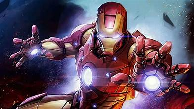

პერსონაჟები

რკინის კაცი
რკინის კაცი (Iron Man) არის ერთ-ერთი ყველაზე ცნობილი Marvel Comics-ის პერსონაჟი, რომელიც პირველად გამოჩნდა "Tales of Suspense" #39 ნომერში 1963 წელს. მისი შექმნა მოხდა სტენ ლი, ლარი Lieber, და დონ ჰეკის მიერ. რკინის კაცის რეალური სახელი არის ტონი სტარკი (Tony Stark). ის არის უმდიდრესი იარაღების მწარმოებელი, გენიოსი და ინჟინერი. ტონი სტარკი მძიმედ დაშავდება, როდესაც ის სარაკეტო თავდასხმისას გატყდება. მძიმედ დაშავებული, მან იწყებს საკუთარი მექანიზმის შექმნას, რომელიც საშუალებას მისცემს მას სიცოცხლისთვის საჭირო ენერგია მიიღოს. ტონი სტარკი ქმნის სხვადასხვა ვერსიის რკინის კოსტუმებს, რომლებიც მას სუპერ ძალასა და ტექნოლოგიურ უნარებს ანიჭებს. კოსტუმები შეიძლება იყვნენ оснащены სხვადასხვა იარაღით, ტექნოლოგიური შესაძლებლობებით და თვითმფრინავი ფუნქციებით. რკინის კაცი არის Avengers-ის ერთ-ერთი ფუძემდებელი წევრი, რაც ძალიან მნიშვნელოვანი როლი აქვს Marvel Cinematic Universe-ის ისტორიაში. რკინის კაცს აქვს რამდენიმე ცნობილი მტერი, მათ შორის: ობადაია სთეინი (Obadiah Stane) ტენესის ტუნარი (Ten Rings) მანდარინი (Mandarin) კინო და ტელევიზია: რკინის კაცი გახდა ძალიან პოპულარული Marvel Cinematic Universe-ის წყალობით, სადაც ტონის როლს რობერტ დაუნი უმცროსი ასრულებს. მისი პირველი გამოჩენა იყო ფილმში "Iron Man" (2008), რაც MCU-ის პირველი ფილმი იყო. რკინის კაცი გახდა სიმბოლო ტექნოლოგიური პროგრესისა, ლიდერობისა და ადამიანის რესურსების მაქსიმალური გამოყენების. მისი ისტორია მოიცავს მნიშვნელოვანი თემები, როგორიცაა პასუხისმგებლობა, მორალი და პირადი განვითარება. რკინის კაცი არის გამორჩეული და საინტერესო პერსონაჟი, რომლის ისტორია მოიცავს როგორც გმირობას, ასევე კომპლექსურ პირად საკითხებს.
სტივ როჯერსი(კაპიტანი ამერიკა)

კაპიტან ამერიკა არის სუპერგმირი, რომელიც შეიქმნა Marvel Comics-ის მიერ. მისი პირველი გამოჩენა მოხდა 1941 წელს, კომიქსში "Captain America Comics" #1-ში. მისი ნამდვილი სახელია: სტივ როჯერსი. სტივი იყო სუსტი ახალგაზრდა, რომელიც უნდოდა მონაწილეობა მიეღო სამხედრო სამსახურში მეორე მსოფლიო ომის დროს, მაგრამ ჯანმრთელობის მდგომარეობის გამო უარვყეს. მას მოხალისედ გადაეცა საიდუმლო პროგრამაში "Operation Rebirth". სტივს გაუკეთეს სუპერ-სარდლის სერუმი, რაც მის შესაძლებლობებს მაქსიმალურ დონეზე გაზრდიდა და მას კაპიტან ამერიკად აქცევდა. იგი ატარებს პატრიოტულ კოსტიუმს, რომელიც ამერიკის დროშის ფერებითაა შემკული. მისი ცნობილი ფარი გაკეთებულია ვიბრანიუმის ნაერთით, იგი როგორც თავდაცვის, ასევე პროექტილის სახით იყენებს მას. კაპიტან ამერიკა ხშირად ხელმძღვანელობს სუპერგმირების გუნდს, რომელსაც (შურისმაძიებლები)Avengers ჰქვია და წარმოადგენს მართლმსაჯულების, პატივის და პატრიოტიზმის სიმბოლოს. მისი ისტორიები ხშირად მოიცავს მორალობის, მსხვერპლისა და გმირობის კომპლექსურ თემებს, განსაკუთრებით იმ სამყაროში, სადაც მორალური დილემები არსებობს.
ადამიანი ობობა
სპაიდერმენი (Spider-Man) არის ერთ-ერთი ყველაზე ცნობილი კომიქსების გმირი, რომელიც შექმნილია სტენ ლი და სტივი დიტკოს მიერ. მისი პირველი გამოჩენა მოხდა "Amazing Fantasy" 15 ნომერში 1962 წელს. მთავარი ინფორმაცია სპაიდერმენზე: სპაიდერმენის ცნობისწერა ხდება პიტერ პარკერის სახელით. ის ახალგაზრდა ბიჭია, რომელიც ნიუ იორკში ცხოვრობს ბიოლოგიური ცვლილება: პიტერ პარკერის მუტაცირებული იქნა ობობის კბენის შედეგად მას გადაეცა უნარები, როგორიცაა სუპერ ძალა, სისწრაფე, და კედლებზე სიარული. სპაიდერმენს აქვს რამდენიმე უნარი: შეუძლია აწიოს დიდი ობიექტები და მიაღწიოს მაღალ სისწრაფეს. ჩვეულებრივი სისწრაფე: ახერხებს სწრაფად მოძრაობას და რეაგირებას. ინსტინქტური "სპაიდერმენი": აქვს "სპაიდერფერი", რაც ეხმარება საშიშროების წინასწარ გაცნობაში. მასკა და ტანსაცმელი: სპაიდერმენი ცნობილია მისი სიმბოლური ლურჯი და წითელში ტანსაცმლით, რომელიც ემსახურება მის ასოციაციას ქვეწარმავლებთან. სპაიდერმენს ყავს მრავალი ცნობილი მტერი, მათ შორის: მწვანე გობლინი დოკ ოკი ვენომი კარნაჟი კინო და ტელევიზია: სპაიდერმენი იყო უამრავი ფილმის, სატელევიზიო შოუების და კომიქსების მთავარი გმირი. ყველაზე ცნობილი ფილმები მოიცავს სემი რეიმის ტრილოგიას და მარველის "Spider-Man: Homecoming". სპაიდერმენის ყველაზე ცნობილი ციტატა არის: "დიდი ძალა მოითხოვს დიდ პასუხისმგებლობას", რაც მის ფილოსოფიას გამოხატავს. სპაიდერმენი ერთ-ერთი ყველაზე პოპულარული და გავლენიანი სუპერ გმირია, რომლის ისტორია სავსეა ემოციებით, გამოწვევებით და გმირობის თემებით.
შავი პანტერა
შავი პანტერა (Black Panther) არის Marvel Comics-ის პერსონაჟი, რომელიც პირველად გამოჩნდა "Fantastic Four" 52 ნომერში 1966 წელს. ის არის ვაკანდას მეფე და უმნიშვნელოვანესი გმირი, რომელიც ხშირად სუპერ გმირების ჯგუფებთან, როგორიცაა Avengers, არის დაკავშირებული. შავი პანტერას რეალური სახელი არის ტჩალა (T'Challa). ის არის ვაკანდას მეფის შვილი და მამის გარდაცვალების შემდეგ იქცა ქვეყნის მმართველად. ვაკინდა არის აფრიკაში განთავსებული საკულტო და ტექნოლოგიურად განვითარებული ქვეყანა, რომელიც ცნობილია მისი უნიკალური რესურსით - ვიბრანიუმით. ტჩალა ფლობს სუპერ ძალას, სისწრაფეს და მოქნილობას-ს, რაც ეხმარება მას ბრძოლაში. მისი უნარები არის ხანგრძლივი ვარჯიშის შედეგი, რომელიც მას ვაკანდას ფიზიკურ და მენტალურ შესაძლებლობებს აძლიერებს. შავი პანტერის ტანსაცმელი მზადდება ვიბრანიუმისგან, რაც მას განსაკუთრებულ დაცვის უნარებს ანიჭებს. მას აქვს ასევე სხვადასხვა ტექნოლოგიური მოწყობილობები, რაც მისი ბრძოლის უნარებს აძლიერებს. შავ პანტერას ყავს რამდენიმე ცნობილი მტერი, მათ შორის: ერიკ კილმონგერი (Killmonger) უებესი (Ulysses Klaue) კინო და ტელევიზია: შავ პანტერა გამოჩნდა Marvel Cinematic Universe-ში, ყველაზე ცნობილი მისი ხასიათი იყო ფილმში "Black Panther" (2018), სადაც ტჩალას როლს ჩადვიკ ბოსმანი ასრულებს. ფილმმა დიდი პოპულარობა მოიპოვა და მრავალი პრიზიც მოიპოვა. შავი პანტერა ითვლება ერთ-ერთ პირველ სუპერ გმირად, რომელიც შავ კულტურას და აფრიკული ტრადიციების ასახვას ასახავს კომიქსებში და კინოს სამყაროში. შავი პანტერა არის ძლიერი და გავლენიანი პერსონაჟი, რომლის ისტორია ეხება ძალაუფლების, პასუხისმგებლობის და კულტურული მემკვიდრეობის თემებს.
ნატაშა რომანოვი(შავი ქვრივი)
შავი ქვრივი (Black Widow) არის სუპერგმირი მარველის სამყაროში, რომელიც შექმნილია მორფი და მარი ვივიენას მიერ. მისი პირველი გამოჩენა მოხდა "Tales of Suspense" #52-ში 1964 წელს. მისი ნამდვილი სახელია: ნატაშა რომანოვა (Natasha Romanoff) ნატაშა რუსეთში დაიბადა და ახალგაზრდობიდანვე ჩაირიცხა სუპერ-მოკლეს მინი-პროგრამაში, სადაც მიიღო ხელოვნების და ომის ტექნიკის უნარები. იგი იმუშავებდა საბჭოთა კავშირის საიდუმლო სამსახურში. ნატაშა არის ოსტატი მებრძოლი, რომელმაც შეისწავლა სხვადასხვა საბრძოლო სტილი, აქვს განსაზღვრული სისწრაფე და მოქნილობა, მისი კოსტიუმი ხშირად აღჭურვილია ტექნოლოგიური მოწყობილობებით, რაც მას დამატებითი შესაძლებლობების გამოყენების საშუალებას აძლევს. შავ ქვივი ერთ-ერთი საყრდენი წევრია Avengers-ის გუნდში. მისი უნარები და გამოცდილება ფასდაუდებელია ბრძოლაში. შავ ქვივზე ფილმებში პირველად გამოჩნდა მარველში, რომელიც მსახიობმა სკარლეტ იოჰანსონმა ითამაშა . იგი მნიშვნელოვან როლს თამაშობს ფილმებში, როგორიცაა "The Avengers" (2012) და "Black Widow" (2021). შავი ქვრივი არის ერთ-ერთი ყველაზე გამძლე და პოპულარული ქალბატონი სუპერგმირი Marvel-ის სამყაროში, რომელიც ატარებს ძლიერ და დინამიური ქალის სიმბოლოს. მისი პერსონაჟი არის გმირი, რომელმაც ბევრი დაბრკოლება გადალახა და დაამტკიცა, რომ სიძლიერე და სიმამაცე ყოველთვის არ არის დაკავშირებული მხოლოდ ფიზიკურ ძალასთან.
ვანდა მაქსიმოვი
ვანდა მაქსიმოვი (Wanda Maximoff), უფრო ცნობილი როგორც ალისფერი ჯადოქარი (Scarlet Witch), არის სუპერგმირი მარველის სამყაროში. მისი პერსონაჟი შექმნილია ჯეკ კერბის და სტენ ლი მიერ და პირველად გამოჩნდა "X-Men" #4 კომიქსში 1964 წელს. ვანდა და მისი ძმა, პიეტრო მაქსიმოვი გაწვეულები არიან ექსპერიმენტებზე, რომლებიც მათ სუპერ ძალას სძენს. მათი ბავშვობა იყო ტრაგიკული, რაც მათ ცხოვრებაში დიდ გავლენას ახდენს. თავიდან ვანდა და მისი ძმა მტრად ითვლებოდნენ, მაგრამ მოგვიანებით გაერთიანებულები არიან Avengers-ის გუნდში. ვანდა არის ძლიერი ჯადოქარი, რომლის უნარები მოიცავს რეალობის მანიპულაციას, გონების კონტროლს და ენერგიის აფეთქებებს. მისი ძალები ხშირად დამოკიდებულია მის ემოციურ მდგომარეობაზე. მისი ძალები შესანიშნავად მოქმედებს სამყაროში, მაგრამ ამავე დროს აქვს ნეგატიური შედეგები. ვანდა ერთ-ერთი მნიშვნელოვანი წევრია Avengers-ის გუნდში, სადაც ხშირად მონაწილეობს ბრძოლებში და მოპოვებს სტრატეგიულ წარმატებებს, მისი ისტორიები ხშირად ეხება ტრაგედიას, დაკარგვას და ძალის მოპოვებას, რაც ქმნის მყარ ემოციურ საფუძველს. ვანდა პირველად გამოჩნდა Marvel Cinematic Universe-ში "Avengers: Age of Ultron" (2015) ფილმში, სადაც მას ელიზაბეტ ოლსენი თამაშობს. მისი პერსონაჟი აქტიურად მონაწილეობს სხვადასხვა ფილმებში, მაგალითად, "Avengers: Infinity War" და "WandaVision" (2021) სერიალში. ვანდა მაქსიმოვი არის ერთ-ერთი ყველაზე პოპულარული და დინამიური პერსონაჟი Marvel-ის სამყაროში, რომლის მტკიცებულებაც მეტისმეტად სერიოზულია. მისი ისტორია აჩვენებს ადამიანის მხარეს, რომელსაც აქვს ძლიერი ძალები, მაგრამ ამავე დროს სჭირდება ისწავლოს კონტროლი მის მაგიაზე.
ვენომი
ვენომი (Venom) არის Marvel Comics-ის ერთ-ერთი ყველაზე პოპულარული და საინტერესო პერსონაჟი. მისი პირველი გამოჩენა მოხდა 1984 წელს "The Amazing Spider-Man" 300 ნომერში. ვენომი ცნობილი სიმბიოტისგან (symbiote) შექმნილია და წარმოადგენს რთულ პერსონაჟს, რომლის ისტორიაც ეხება გმირობას და ანტიგმირობას. ვენომის ორიგინალი ქარიმი არის ედი ბროკი (Eddie Brock), ჟურნალისტი, რომელიც თავდაპირველად Spider-Man-ის ერთ-ერთი მტერი გახდა. ვენომი არის უცხოპლანეტური სიმბიოტი, რომელიც ედის სხეულში შევა და ქმნის მასთან მჭიდრო კავშირს. სიმბიოტი აქვს საკუთარი სურვილები და ძალები, რაც ედის მასთან ურთიერთობას ძალიან კომპლექსურს ხდის. ვენომი ფლობს რამდენიმე უნარს, მათ შორის: სუპერ ძალა: შეუძლია აწიოს და დაანგრიოს დიდი ობიექტები. ვენომის შეუძლია შეცვალოს მისი ფორმა და გახდეს უხილავი. მას აქვს რეგენერაციის უნარი და უნარი, რომ აიღოს Spider-Man-ის უნარები, როგორიცაა კედლებზე მოძრაობა. ვენომი თავიდან იყო Spider-Man-ის ერთ-ერთი მთავარი მტერი, მაგრამ დროთა განმავლობაში მისი პერსონაჟი უფრო კომპლექსური გახდა და მას გააჩნია საკუთარი მორალური კომპლექსები. ვენომი გამოჩნდა რამდენიმე ფილმში, მათ შორის 2018 წლის "Venom", სადაც ტომ ჰარდი ასრულებს ედის როლს. ფილმში ვენომის ისტორია დგას მორალური და ემოციური საკითხების გარშემო. ვენომი გახდა სიმბოლო კონფლიქტის და შინაგანი ბრძოლის, რაც ხშირად განიხილება როგორც კარგი და ცუდის მიღმა არსებულ სფეროში. ვენომი ერთ-ერთი ყველაზე საინტერესო და მრავალმხრივი პერსონაჟია Marvel-ის სამყაროში, რომლის ისტორია სავსეა ემოციებით და გმირობის თემებით.
ლოკი
ლოკი (Loki) არის Marvel Comics-ის ერთ-ერთი გამორჩეული და ცნობილი პერსონაჟი, რომელიც პირველად გამოჩნდა "Journey into Mystery" 85 ნომერში 1962 წელს. ის დაფუძნებულია ნორვეგიული მითოლოგიის ღმერთზე, რომელიც ცნობილი არის როგორც ილუზიების და ტყუილების ღმერთი. ლოკი არის ოდინის ნახევარ ძმა და თორის ძმისბედა. ის არის ასგარდის ღმერთი, რაც მას ხდის უნიკალურ პერსონაჟად. ლოკი ცნობილია თავისი ჭკვიანური, მზაკვრული და განსახიერებული ნატურით. იგი ხშირად იყენებს თავის მანიპულაციურ უნარებს, რომ მიაღწიოს მიზნებს, ხშირად აურებს თავის ახლობლებთან. ლოკი ფლობს ჯადოსნური უნარების ფართო სპექტრს, როგორიცაა: შეუძლია შექმნას ილუზიები და შეცვალოს თავისი გარეგნობა. მას აქვს სხვადასხვა ჯადოსნური უნარები, რაც მას საშუალებას აძლევს მოახდინოს განსხვავებული გავლენა გარემოზე. მტრები და მეგობრები: ლოკი არის როგორც მტერი, ასევე მეგობარი, განსაკუთრებით თორის მიმართ. მათი ურთიერთობა არის ძალიან კომპლექსური, სადაც ხშირად ებრძვიან ერთმანეთს, მაგრამ საბოლოო ჯამში შეიძლება ერთად თანამშრომლობდნენ. Marvel Cinematic Universe: ლოკი გახდა პოპულარული Marvel Cinematic Universe-ის წყალობით, სადაც მისი როლი მოირგო ტომ ჰიდლსტონმა. ის გამოჩნდა რამდენიმე ფილმში, მათ შორის "Thor", "The Avengers" და "Thor: Ragnarok". 2021 წელს გამოვიდა "Loki" სატელევიზიო შოუ, რომელიც მასზე ფოკუსირდება და აჩვენებს მისი თავგადასავლების ახალ განზომილებას. ლოკი წარმოადგენს იმ იდეას, რომ ადამიანს აქვს შესაძლებლობა, იყოს როგორც კარგი, ასევე ცუდი. მისი ისტორია მოიცავს ღირებულებებს, როგორიცაა სითამამე, მეგობრობა და ოჯახის მნიშვნელობა. ლოკი არის მრავალმხრივი და საინტერესო პერსონაჟი, რომლის ისტორია სავსეა სახალისო და დამაფიქრებელი მომენტებით, რაც მას პოპულარული და საყვარელი გმირად აქცევს. (edited) NEW
დოქტორ დუმი

დოქტორ დუმი არის პოპულარული კომიქსების პერსონაჟი, რომელიც არის Marvel Comics-ის ბოროტმოქმედი. მისი ნამდვილი სახელი ვიქტორ ფონ დუმი და ის გამოჩნდა პირველად 1962 წელს "Fantastic Four" კომიქსში. დოქტორ დუმი არის გენიოსი მეცნიერი, მაგი და ტექნოლოგიების ექსპერტი, რომელიც ხშირად ებრძვის Fantastic Four-ის გუნდის წევრებს. ის მოიხსენიება როგორც ერთ-ერთი ყველაზე ძლიერი და გავლენიანი ბოროტმოქმედი Marvel-ის სამყაროში. მისი ხასიათი და მოტივები მრავალფეროვანი და კომპლექსურია, რაც მას განსაკუთრებულად საინტერესო პერსონაჟად ხდის.
აგათა ჰარკნესი
აგათა ჰარკნესი (Agatha Harkness) არის ჯადოქარი მარველის სამყაროში, რომელიც პირველად გამოჩნდა "Fantastic Four" #94-ში 1970 წელს. იგი ცნობილი ჯადოქარი და ჯადოქრობის მასწავლებელია. აგათა ჰარკნესი არის უძველესი და ძლიერი ჯადოქარი, რომელიც საუკუნეების მანძილზე ცხოვრობს. მისი ისტორიები ხშირად მოიცავს სხვადასხვა მითი და ლეგენდა, რაც მას დიდ ძალას და ცოდნას აძლევს. აგათა რამდენიმე სუპერგმირზე და გმირებზე არის გავლენიანი, განსაკუთრებით ვანდა მაქსიმოვზე. აგათას აქვს ფართო სპექტრი ჯადოსნური უნარების, როგორიცაა რეალობის მანიპულაცია, წინასწარმეტყველება და სხვა ძალები. იგი გამოცდილია ჯადოსნურ სპექტრებში და საზღვრების მიღმა. აგათა ცნობილია როგორც სარეკომენდაციო ქარიზმით, რომელიც შეუძლია მტრების და მეგობრების შორის დინამიური ურთიერთობების შექმნა. აგათას ურთიერთობები ხშირად მოიცავს ალისფერ ჯადოქართან სადაც იგი გვთავაზობს გაწვდილობას და სტრატეგიულ ცოდნას. თუმცა, მისი მიზნები ხშირად გარკვეულ სირთულეებთან არის დაკავშირებული. აგათა ჰარკნესის ისტორიები მოიცავს სირთულეებს, მორალურ არჩევანებს და ურთიერთობების კომპლექსურობას. აგათა ჰარკნესი პოპულარული გახდა "WandaVision" სერიალში, სადაც მას ქეთრინ ჰანი თამაშობს. სერიალში იგი გამოჩნდა როგორც მეზობელი, რომელმაც დიდი გავლენა იქონია ვანდას ცხოვრებაზე. აგათა ჰარკნესი არის ჯადოქარი, რომლის ძალები და მორალური რთულობები ხშირად აორმაგებს მარველის სამყაროს სიუჟეტებს. მისი პერსონაჟი წარმოადგენს ჭკვიანურ და დინამიურ ქალს, რომლის გავლენაც შეიძლება იყოს როგორც პოზიტიური, ასევე ნეგატიური.
ჰელა
ჰელა (Hela) არის Marvel Comics-ის პერსონაჟი, რომელიც პირველად გამოჩნდა "Journey into Mystery" #102-ში 1964 წელს. იგი ცნობილია როგორც სიკვდილის ქალღმერთი და მძლავრი ჯადოქარი, რომლის ძალები უკავშირდება ასგარდის და სკანდინავიურ მითოლოგიას. ჰელა არის ლოკის და ანგერბოდას (Angerboda) შვილიშვილი, რაც მას კეთილი და ბოროტი ძალების მიქსის საშუალებას აძლევს. იგი წარმოდგენილია როგორც სიკვდილის ქალღმერთი, რომელსაც აქვს პირდაპირი კავშირი სიბნელესა და სიკვდილის სამყაროსთან. იგი ხშირად ასგარდის კანონების წინააღმდეგ მოქმედებს, რადგან ცდილობს თავისი ძალები და გავლენა გააძლიეროს. ჰელას აქვს უამრავი ჯადოსნური უნარი, როგორიცაა ენერგიის მანიპულაცია, უსასრულო ძალა და ძლიერების კონტროლი. მას შესწევს გარდაცვლილთა გაცოცხლების. ჰელა არის გამოცდილი მებრძოლი, რომელიც სრულყოფილად ფლობს სხვადასხვა საბრძოლო ხელოვნებას. ჰელა ხშირად გამოჩნდა Marvel Comics-ის ისტორიებში როგორც მთავარი ანტაგონისტი, რომელიც ებრძვის ტორას და სხვა გმირებს. მისი ისტორია ეხება სიკვდილს, განადგურებას და ძალაუფლების მოთხოვნას, რაც ქმნის ძლიერ მორალურ დილემებს. ჰელა ითამაშა ტესა თომპსონის მიერ "Thor: Ragnarok" (2017) ფილმში, სადაც მას ნეგატიური როლი აქვს და ცდილობს ასგარდის სახელმწიფოს კონტროლში ჩააყენოს. ჰელა არის ერთ-ერთი ყველაზე ძლიერ და გავლენიანი ქალბატონი მარველის სამყაროში. მისი პერსონაჟი აჩვენებს სირთულეს, რომელიც დაკავშირებულია სიკვდილთან და ძალაუფლებასთან, რაც მას გამორჩეულ პიროვნებად აქცევს სუპერგმირების სამყაროში.
დედპული
დედპული (Deadpool) არის Marvel Comics-ის ერთ-ერთი ყველაზე უნიკალური და პოპულარული პერსონაჟი, რომელიც პირველად გამოჩნდა "The New Mutants" 98 ნომერში 1991 წელს. მისი შექმნა მოხდა რაიან რენოლდსის, ფაბიან ნიციეზის და ედ მეკინიუს მიერ. დედპულის რეალური სახელი არის უიდ ვილსონი (Wade Wilson). იგი ყოფილი სამხედროა, რომელმაც ექსტრავაგანტური და კომიკური ისტორია გაიარა. დედპული ცნობილია თავისი განსაკუთრებული უნარებით: მისი სხეული შეუძლია სწრაფად განახლდეს, რაც მას თითქმის შეუქცევადს ხდის. ის არის ნიჭიერი იარაღების გამოყენების და ხელჩართულ საბრძოლო ტექნიკების ოსტატი. დედპული ცნობილი არის თავისი შავკომიკური ხუმრობებით, და ხშირად უკავშირდება პირდაპირ აუდიტორიას. დედპულმა მიიღო თავისი ძალები "Weapon X" პროექტის ფარგლებში, რაც მას მეხსიერების და პიროვნების ცვლაში მიიყვანა. დედპული ხშირად მონაწილეობს Marvel-ის სხვადასხვა ჯგუფების ისტორიებში, თუმცა ის დიდწილად მოქმედებს როგორც მარტივი გმირი. დედპული გახდა მსოფლიო პოპულარობა "Deadpool" (2016) და "Deadpool 2" (2018) ფილმების წყალობით, სადაც როლს რაიან რეინოლდსი ასრულებს. ფილმები ცნობილია მათი ჰუმორის, აქცენტირებული სისხლიანი სცენების და მეტყველების სტილის გამო. დედპული არის სიმბოლო ანტიგმირობის, რომელიც აწვდის მკაფიო და ხშირად კომიკურ კუთხით სუპერ გმირების კლასიკურ ისტორიებს. დედპული არის ხასიათი, რომელიც აერთიანებს ექსტრავაგანტულობას, კომედიას და სუპერ გმირის ელემენტებს, რაც მას უნიკალურ და პოპულარულ პერსონაჟად აქცევს Marvel-ის სამყაროში.
ვოლვერინი
ვულვერინი (Wolverine) არის Marvel Comics-ის ერთ-ერთი ყველაზე პოპულარული და ცნობადი პერსონაჟი. მისი პირველი გამოჩენა მოხდა "The Incredible Hulk" 180 ნომერში 1974 წელს. ის განსაკუთრებით ცნობილია თავისი სუპერ ძალის, რეგენერაციის უნარის და ხანგრძლივი ისტორიის გამო. ვულვერინის რეალური სახელი არის ლოგან (Logan). მისი წარსული მუქი და საიდუმლოებით აღსავსეა, რაც მას ძალიან კომპლექსურ პერსონაჟად აქცევს. ვულვერინი შეუძლია სწრაფად აღიდგინოს სხეული დაზიანების შემდეგ, რაც მას ფაქტობრივად უკვდავების თვისებას ანიჭებს. მას აქვს დამამცირებელი ძალა, სისწრაფე და გამომცემლობა. ვულვერინის ხელში აქვს სპეციალური, თითქმის უტყუარი კლანჭები, რომლებიც ადამანტიუმისგან არის დამზადებული, რაც მას ძალასა და ლაშქრობის უნარს სთავაზობს. ვულვერინი არის X-Men-ის ერთ-ერთი ფუძემდებელი და უმნიშვნელოვანესი წევრი. ის ხშირად ეხმარება გუნდს ბრძოლაში მტრის წინააღმდეგ. ვულვერინის მრავალი ცნობილი მოწინააღმდეგე არსებობს, მათ შორის: სკარლეტი (Sabretooth) თალიო (Lady Deathstrike) დოქტორი მულტიპლექსი (Weapon X) ვულვერინი გახდა მსოფლიო პოპულარობა "X-Men" ფილმების სერიების წყალობით, სადაც როლს ჰიუ ჯეკმანი ასრულებს. მისი პირველი გამოჩენა იყო "X-Men" (2000), და მან მოახდინა როლი რამდენიმე გაგრძელებაში, ასევე თავის ინდივიდუალურ ფილმებში, როგორიცაა "Logan" (2017). ვულვერინი არის სიმბოლო ერთგულებისა და ბრძოლის. მისი ამბავი ეხება პირადი ბრძოლების, დაკარგვის და გმირობის თემებს. ვულვერინი არის ძალიან საინტერესო და მრავალმხრივი პერსონაჟი, რომლის ისტორია სავსეა ემოციებით, ბრძოლით და კითხვის ნიშნებით.
ენთმენი
ენთმენია (Ant-Man) Marvel Comics-ის პერსონაჟი, რომლის ორიგინალური სახელი არის ჰენკ პიმ (Hank Pym). მისი პირველი გამოჩენა მოხდა "Tales to Astonish" 27 ნომერში 1962 წელს. ენთმენია განსაკუთრებული პერსონაჟია, რომელიც აქვს უნარი, რომ შეიცვალოს ზომა და აკონტროლოს ობობები. ჰენკ პიმ არის გენიოსი მეცნიერი, რომელმაც შექმნა ტექნოლოგია, რომელიც საშუალებას აძლევს ადამიანს შეიცვალოს ზომა. ჰენკი და მისი მიმდევრები (როგორც Scott Lang) შეუძლიათ გახდნენ ძალიან პატარა ან უზარმაზარი, რაც მათ სხვადასხვა შესაძლებლობებს ანიჭებს. ენთმენია შეუძლია კონტროლი გაუწვდოს ობობების და სხვა მწერების, რაც მას მნიშვნელოვნად ზრდის ბრძოლის უნარებს. ენთმენთან ერთად გამოჩნდნენ სხვა პერსონაჟები, როგორიცაა: უსულო (Hope van Dyne): ჰენკის ქალიშვილი, რომელიც ასევე გახდა ენთმენ და ცნობილია როგორც ვასპი (Wasp). სკოტ ლანგი (Scott Lang): კიდევ ერთი ენთმენი, რომელმაც დაამტკიცა, რომ თხოვნის მიღებით შეძლო გახდეს გმირი. ენთმენია ხშირად მონაწილეობს Avengers-ის ისტორიებში, როგორც გუნდის წევრი. ენთმენია პოპულარული გახდა Marvel Cinematic Universe-ის წყალობით, სადაც სკოტ ლანგის როლი მოირგო პოლ რასმა. მისი პირველი ფილმი "Ant-Man" გამოვიდა 2015 წელს, ხოლო გაგრძელება "Ant-Man and The Wasp" (2018). ენთმენია სიმბოლო სიძლიერისა, ინტელექტისა და გუნდის მუშაობის. მისი ისტორია ეხება იმას, თუ როგორ შეიძლება ერთი ადამიანი დაამტკიცოს, რომ შეუძლია გახდეს გმირი, მიუხედავად მისი ზომისა. ენთმენია საინტერესო და მრავალმხრივი პერსონაჟია, რომლის ისტორია სავსეა მეცნიერული ექსპერიმენტების, ბრძოლების და ოჯახური კავშირების თემებით.
თანოსი
თანოსი არის ერთ-ერთი ცნობილი პერსონაჟი მულტიფილმურ და კომიქსურ სამყაროში, რომელიც ძირითადად დაკავშირებულია Marvel Comics-ის სამყაროსთან. იგი პირველად გამოჩნდა 1973 წელს კომიქსში "The Invincible Iron Man" და მასში არის ასევე ცნობილი როგორც "ადამიანი მტრის" და "კოსმოსური მბრძანებელი". თანოსი წარმოადგენს ძლიერი და ჭკვიანი არსებობა, რომელიც ეძებს ძალას და უპირატესობას. მისი ყველაზე ცნობილი მოტივაცია არის "სიყვარულის ბალანსი", რაც მისი გამოსახვის მიხედვით გულისხმობს, რომ უნდა შემცირდეს შვიდიდან ადამიანის მოსახლეობა, რათა დარჩენილი ხალხისთვის მეტი რესურსი დარჩეს. მისი სახელი უმეტესად დაკავშირებულია "Infinity Stones"-თან, რომლებმაც მის ცხოვრებაში მნიშვნელოვან როლი ითამაშა. ფილმში "Avengers: Infinity War" და "Avengers: Endgame" თიანოსი გამოჩნდება როგორც მთავარი ანტაგონისტი, რომელმაც თავისი გეგმების განხორციელებისას შეიჭრა სამყაროში. თანოსი, რომელსაც ხშირად „გალაქტიკის მბრძანებლად“ მოიხსენებენ, არის ტიტანების ობიექტური სახე, რომლებიც ამავდროულად კოსმიური ძალის მატარებელნი არიან. იგი დაიბადა ტიტანზე, სატურნის თანამგზავრზე, და წარმოშობით არის ევოლუციურად განსხვავებული, რადგან მისი გარეგნობა ადამიანებისგან მკვეთრად განსხვავდება — აქვს ფირუზისფერი კანი, გაზრდილი ყურები და ძლიერი სხეულის სამშვენისი.
ნებულა
ენთმენია (Ant-Man) Marvel Comics-ის პერსონაჟი, რომლის ორიგინალური სახელი არის ჰენკ პიმ (Hank Pym). მისი პირველი გამოჩენა მოხდა "Tales to Astonish" 27 ნომერში 1962 წელს. ენთმენია განსაკუთრებული პერსონაჟია, რომელიც აქვს უნარი, რომ შეიცვალოს ზომა და აკონტროლოს ობობები. ჰენკ პიმ არის გენიოსი მეცნიერი, რომელმაც შექმნა ტექნოლოგია, რომელიც საშუალებას აძლევს ადამიანს შეიცვალოს ზომა. ჰენკი და მისი მიმდევრები (როგორც Scott Lang) შეუძლიათ გახდნენ ძალიან პატარა ან უზარმაზარი, რაც მათ სხვადასხვა შესაძლებლობებს ანიჭებს. ენთმენია შეუძლია კონტროლი გაუწვდოს ობობების და სხვა მწერების, რაც მას მნიშვნელოვნად ზრდის ბრძოლის უნარებს. ენთმენთან ერთად გამოჩნდნენ სხვა პერსონაჟები, როგორიცაა: უსულო (Hope van Dyne): ჰენკის ქალიშვილი, რომელიც ასევე გახდა ენთმენ და ცნობილია როგორც ვასპი (Wasp). სკოტ ლანგი (Scott Lang): კიდევ ერთი ენთმენი, რომელმაც დაამტკიცა, რომ თხოვნის მიღებით შეძლო გახდეს გმირი. ენთმენია ხშირად მონაწილეობს Avengers-ის ისტორიებში, როგორც გუნდის წევრი. ენთმენია პოპულარული გახდა Marvel Cinematic Universe-ის წყალობით, სადაც სკოტ ლანგის როლი მოირგო პოლ რასმა. მისი პირველი ფილმი "Ant-Man" გამოვიდა 2015 წელს, ხოლო გაგრძელება "Ant-Man and The Wasp" (2018). ენთმენია სიმბოლო სიძლიერისა, ინტელექტისა და გუნდის მუშაობის. მისი ისტორია ეხება იმას, თუ როგორ შეიძლება ერთი ადამიანი დაამტკიცოს, რომ შეუძლია გახდეს გმირი, მიუხედავად მისი ზომისა. ენთმენია საინტერესო და მრავალმხრივი პერსონაჟია, რომლის ისტორია სავსეა მეცნიერული ექსპერიმენტების, ბრძოლების და ოჯახური კავშირების თემებით.